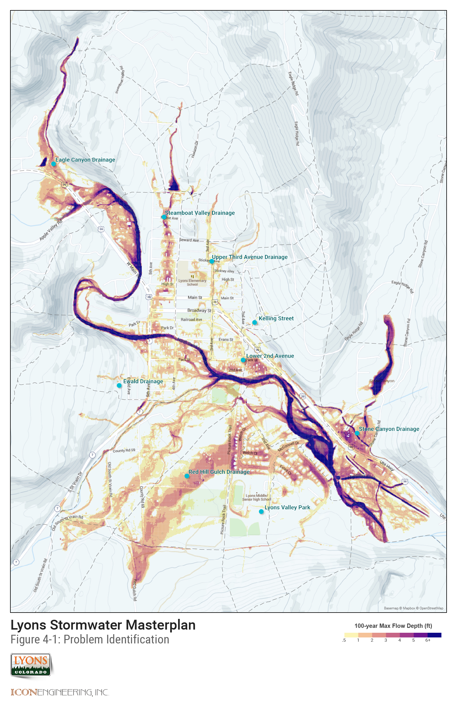

4.0 Hydraulic Analysis
4.1 Previous Analysis and Events
The information provided in the previous 1998 Drainage Master Plan study was used to help identify flood hazards throughout the Town of Lyons. The previous report identifies several key areas as having potential for flooding hazards. A few key events are highlighted for reference.
In the August 1994 flood the Ewald Avenue subwatershed was observed to produce enough runoff to carry debris off the hillside onto the residential streets.
Steamboat Valley was identified as having the greatest impact to flooding throughout the Town of Lyons. The report indicated the Steamboat Valley Watershed was the hardest hit area during the 1994 storm. The existing storm drain system between 4th and 5th Avenue was estimated to be an approximate 5-year storm capacity. The storage behind the old railroad embankment was identified as an issue of major concern. The properties downstream of the railroad embankment have grown reliant on this detention and removal of this detention would have negative impacts to downstream property owners. Several properties behind the railroad embankment were noted to be at risk of flooding when the detention area was full.
The conveyance of Red Hill Gulch stormwater runoff in South Ledge Ditch was identified as a possible flooding hazard. The report noted the possibility of the ditch embankment to become compromised and the bank to be breached with the conveyance of storm water runoff. It should be noted that Lyons Valley Subdivision was not constructed at the time of the previous report.
The 2013 flood event had a well-documented impact on the Town of Lyons. The confluence of the north and south St. Vrain Rivers was the center of flood damages during the 2013 floods. Several reports provide further documentation of the flood event. Numerous post-flood studies on the floodplain and restoration projects are also available.
A 2015 flood event was notable because of the hail associated with the storm. The resulting hail-laden runoff clogged surface conveyance (streets, gutters) as well as capture systems (inlets, outlet structures).
4.2 Evaluation of Existing Facilities
Existing storm drain infrastructure was evaluated to determine the approximate design storm frequency. A summary of existing infrastructure is provided in the GIS data provided in Appendix K. (or on web map application at www...)
FLO-2D software is a two-dimensional flood routing model that was used to identify residual flood potential with the watershed. FLO-2D simulates channel flow, unconfined overland flow and street flow over complex topology. The model uses the full dynamic wave momentum equation and a central finite difference routing scheme with eight potential flow directions to predict the progression of a floodwave over a system of square grid elements. The development of the FLO-2D model is further discussed below.
4.2.1 Flo-2D Model Development
10-foot by 10-foot grid cells were used to maximize the precision in identifying flooding potential throughout the watershed. Elevations for each grid cell were computed through FLO-2D by interpolating the project LiDAR data. Building obstructions were incorporated into the FLO-2D model based on building footprint data that was generated as part of this study.
Individual subwatershed hydrographs were taken from the hydrology model (CUHP) and applied to the FLO-2D surface. Each hydrograph was applied at a single FLO-2D grid cell where the majority of discharges were expected to converge for each subwatershed. Existing storm drain systems 24-inch and larger were included in the FLO-2D model.
Separate FLO-2D models were used to distinguish the flooding potential for the study area for each of the design storms.
The results of these models are provided in Appendix D. (And also on the web map at www...)
4.3 Flood Hazards
FLO-2D uses the full dynamic wave momentum equation when computing flow depth at each cell in the study area. This computational methodology accounts for floodplain storage at each sump location in the watershed attenuating flows as they traverse the watershed downstream. This floodplain storage is not accounted for in the SWMM model which is computed using a kinematic wave approach. This difference in modeling approach leads to discrepancies when comparing design peak flows from the SWMM model and the inundation limits shown in the hydraulic analysis. Existing capacity for each outfall system was estimated from normal depth calculations given each pipe slope. The existing storm drain infrastructure generally lacks the capacity to adequately convey the 5-year storm event.
This is not unusual for a town the age and size of the Town of Lyons. Land use regulations and stormwater management policies were not common to smaller towns along the Front Range of Colorado until sometime after the 1965 flood on the South Platte River ravaged metro Denver. By the time development regulation and stormwater infrastructure recommendations expanded to include smaller towns along the Front Range, a lot of Lyons' roadways and private development had encroached on the natural drainageways.
 Figure 4-1: Problem ID Map
4.3.1 Eagle Canyon
The most significant flooding hazard in the Eagle Canyon Watershed is just upstream of the confluence with North St. Vrain Creek. Development immediately upstream of the confluence has limited the capacity of the channel. By limiting the ability of the channel to convey water to North St. Vrain, the discharge overtops Main Street and spills to the south.
4.3.2 Eastern Lyons
The small swale and private roadway culverts along the east side of 2nd Avenue limit the capacity to convey the basin runoff downstream. With no storm drain or curb and gutter system installed along 2nd Avenue, all basin runoff will flow along 2nd Avenue on the street. As mentioned previously, during major events runoff from the Eastern Lyons watershed any flow overtopping 2nd Avenue will flow west and contribute flow to the Third Avenue Watershed.
In the lower reaches of Eastern Lyons Watershed the businesses along Main Street and residences along Kelling Drive have experienced flooding in the past. The only storm drain intercepting flow near the businesses is an 18-inch storm drain. This system can capture less than the 5-year design flow in ideal, free flow, no debris conditions.
4.3.3 Ewald Ave
As noted in the previous study, the steep slopes of the Ewald Ave Watershed pose a flooding hazard to the residential development in the lower portions of the watershed. The steep slopes in the upper portion of the watershed result in high velocities of runoff eroding the hillside and carrying debris into the residential development.
4.3.4 Lyons Valley Park
Flooding hazards in the Lyons Valley Park Watershed are a result of development within the basin without adequate storm drain conveyance. The 18-inch storm drain throughout the upper reaches of the development was not design to convey major storm events.
A significant flooding hazard for the Lyons Valley Park Watershed is overflow from the Red Hill Gulch Watershed. The overflow drainage path from Red Hill Gulch is discussion in further detail below.
An overflow path from the hillside south of the High School is an interesting problem. The modeling scenarios do not account for the irrigation ditch that traverses the hillside near the toe of slope. This is a common hydraulic modeling assumption to account for a runoff event during a ditch full scenario. However, in a practical sense the irrigation ditch catches most minor storm events and effectively protects the adjacent residential structures. At a minimum, the ditch should be monitored for stability to ensure overflows and spills from stormwater are handled safely. Additional planning for a time when the ditch is no longer operational or maintained should be considered. Finally, protection or enhancement of the minor swale along the rear lot lines of the neighborhood should be considered to ensure sheet flows are passed around the structures.
4.3.5 North St. Vrain
Flooding hazards in the North St. Vrain Watershed are limited to the lower end of the basin. Generally flows in this basin concentrate in natural valleys and are conveyed overland towards the St. Vrain River.
4.3.6 Red Hill Gulch
The most significant flooding hazard in the Red Hill Gulch Watershed is flow overtopping the South Ledge Ditch and flow continuing north into Bohn Park and Lyons Valley Subdivision. Utilizing the ditch for intercepting and conveying stormwater runoff creates a significant hazard for downstream properties. These comingled flows exceed the design capacity of the canal jeopardizing the structural integrity of the ditch. Flows overtopping the ditch create an uncontrolled overflow impacting Bohn Park and homes in the Lyons Valley Subdivision.
4.3.7 South St. Vrain
Flooding hazards in the South St. Vrain Watershed are generally created by the lack of a formal drainage conveyance system. The topography within these watersheds conveys the runoff in separate flow paths to South St. Vrain Creek.
4.3.8 South 2nd Avenue
Flood hazards within the South 2nd Avenue Watershed are caused by contributing flow from other watersheds, lack of local runoff storm drain conveyance, and proximity to St. Vrain Creek. The elliptical pipe underneath Main Street conveys runoff from the Third Avenue Watershed to the South 2nd Avenue Watershed. The pipe discharges flow into an undersized open channel that conveys flow southeast towards 2nd Avenue. Any flow that is not intercepted by the 24-inch storm drain at 2nd Avenue spills to the south impacting properties. The 18-inch storm drain at 2nd Avenue and Park Street intercepts approximately the XX design flow for the subwatershed, impacting more properties.
4.3.9 Steamboat Valley
The most significant flood hazard impacting downtown Lyons is runoff from Steamboat Valley. The runoff from the upper watershed concentrates behind the old railroad embankment. The area behind the old railroad embankment poses a significant flood hazard to downstream properties. Close observation on the stability and maintenance of this embankment is important to managing the risk of a breach or other failure during a storm event. This will require coordination with several private property owners. Downstream of the railroad embankment development within the natural drainage path has confined the runoff to an undersized open channel through private property. The lack of conveyance capacity of this channel and culvert roadway crossings between 4th Avenue and 5th Avenue creates a flooding hazard damaging private property. Any flow that is not intercepted by the historic stone culvert continues on the surface flowing through backyards with additional impact to private property and structures.
The existing conveyance within Steamboat Valley does not have the hydraulic capacity to convey storms greater than the 5-year return period. More importantly, the materials (stone and open channel) and alignment (erratic with several sharp bends and constrictions) subjects the adjacent properties to additional risk from debris clogging.
4.3.10 Stone Canyon
The steep natural drainageway in the Stone Canyon Watershed conveys the runoff into the open space of the Stone Canyon Subdivision without significant flood hazards. The roadway crossing at Stone Canyon Road conveys the flow downstream without impacting a significant number of residences within the subdivision. Development downstream of Stone Canyon Road has eliminated the conveyance capacity of the channel to convey runoff without impacting properties. The water backs up against Ute Highway as water is conveyed underneath the roadway through the box culvert.
There have been reports of soil subsidence in the open space areas adjacent to the channel. This study did not include detailed geotechnical analysis to determine a cause or effect of the reported soil movement. More formal identification of the problem areas, formal and regular monitoring of those sites, and geotechnical analysis would be required to properly evaluate the risk of those soils relative to flood hazards (i.e. bank failure reducing channel capacity), private, or public property.
4.3.11 Third Avenue
Runoff from the undeveloped upper watershed enters the downtown in two distinct locations. East of the cemetery flow drains south into the developed area of the watershed along Third Avenue. Flow from the eastern portion of the watershed flows into the downtown area west along Stickney Avenue before turning south on Third Avenue. The runoff from the watershed continues south along Third Avenue where the majority of the flow is conveyed in the street. The elliptical pipe at Main Street conveys flow underneath Main Street into the South 2nd Avenue Watershed. Flows exceeding the capacity of the elliptical pipe split with some flow continuing southeast north of Main Street while some flow overtops Main Street and continues flowing down Third Street.